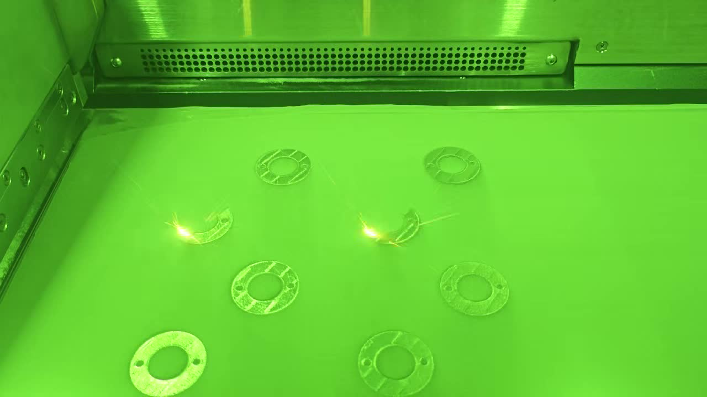

3D-Printed Conformal Cooling: Why Additive Manufacturing Unlocks What Drilling Can't
- The single geometric constraint that makes drilling fundamentally incapable of conformal cooling
- 5 channel geometries that only exist because of additive manufacturing
- How to design 3D-printed conformal cooling in nTop and Autodesk Fusion — the offset-surface method
- Performance data table: 6 part types, before and after, with ΔT, cycle time, and warpage rates
- Material comparison: 420SS vs. 18Ni300 vs. CuCrZr — when conductivity beats hardness
- LPBF design rules that determine whether your insert prints successfully
- Cost-payback analysis at 50k, 100k, and 500k shots
- 5 design mistakes that kill otherwise good conformal cooling projects
Table of Contents
- The Fundamental Constraint Drilling Cannot Overcome
- 5 Geometries Only 3D Printing Can Make
- How to Design 3D-Printed Conformal Cooling
- Performance Comparison: Drilled vs. 3D-Printed Conformal
- Material Options for 3D-Printed Conformal Cooling Inserts
- LPBF Design Rules: What the Printer Demands
- The Economics: Upfront Cost vs. Shot-Based Payback
- 5 Common Design Mistakes
- How to Get Your Insert Made
- FAQ
The Fundamental Constraint Drilling Cannot Overcome
Every cooling channel in every conventionally manufactured mold shares one characteristic: it is straight. A drill bit enters a face, travels in a line, and exits the other side. That is the only geometry it can produce. Plugging one end, intersecting channels, and using baffles or bubblers are all attempts to work around this constraint — not to solve it.

Now consider what the part actually needs. An injection-molded part is not flat. It has curves, ribs, deep cores, thin walls, and varying section thicknesses. The geometry of the part directly determines where heat accumulates, where it lingers, and where it must be removed fastest. A cooling channel that is straight cannot follow these features. It can only get close enough from a distance.
This is the core mismatch between drilling and conformal cooling. The distance between a drilled channel and the mold surface is not constant — it varies with the shape of the part. At some points the channel may be 15mm away. At others, around a deep core or a sharp inside radius, it may be 40mm away or unable to reach at all. The result is uneven cooling: some zones cool quickly, others stay hot. Hot zones slow down the cycle because the mold must stay closed until the hottest point solidifies.
Additive manufacturing (specifically Laser Powder Bed Fusion, LPBF) removes the tool-access constraint entirely. Because the insert is built layer by layer from metal powder, the cooling channel geometry is defined in CAD before the first layer is deposited. The channel can travel in any direction, curve around any feature, branch into multiple paths, or occupy a complex volumetric lattice — all without any drilling tool ever needing to reach it. The freedom is total. The only constraints are the physics of the printing process itself, which are real but well-understood and designable around.
What follows is the design story of that freedom: what geometries it enables, how to harness them, and what they deliver in the press.
5 Geometries Only 3D Printing Can Make

These are not theoretical geometries. Each is in active production use in 3D-printed conformal cooling mold inserts. None can be produced by any subtractive or casting method.
Surface-Conforming Channels at Constant 3mm Offset
A channel network that precisely follows the mold cavity surface at a uniform 3mm offset, regardless of how complex the surface geometry is. The channel path is generated by offsetting the cavity surface inward by 3mm in CAD and routing the channel centerline along this offset surface. This maintains thermally optimal proximity to every point on the mold surface simultaneously — something a drilled channel can only achieve at specific locations along a straight path.
Offset Surface MethodBranching Manifold Networks
A single inlet splits into multiple parallel cooling branches that each follow a different zone of the insert, then rejoin at a single outlet. The flow is balanced across branches by designing each branch to have equal hydraulic resistance (equal channel length and diameter). This distributes coolant flow to exactly where it is needed rather than routing it along one straight path. Conventional drilling cannot create branching internal geometry — every channel must connect to an accessible face, making true manifold networks impossible.
Flow BalancingHelical Spiral Channels in Cores Under 8mm Diameter
For thin, deep cores — the kind found in connectors, medical device molds, and electronic housings — a helical spiral channel wraps around the core from tip to base like a coil spring inside the metal. This is the only geometry that provides distributed cooling along the entire length of a narrow core. Conventional bubblers can only deliver a single up-down flow path, with a single point of maximum heat extraction. A helical conformal channel on a 6mm core can reduce tip temperature differentials from 35°C+ to under 5°C.
Core Tip CoolingTPMS Lattice Cooling (Schwartz Diamond & Gyroid)
Instead of discrete channels, a TPMS (Triply Periodic Minimal Surface) lattice occupies an entire volume of the insert. Coolant flows through the interconnected porous structure, contacting 10–25× more metal surface area per unit volume than cylindrical channels. Schwartz Diamond and Gyroid patterns are the most common — both are self-supporting above 45° (printable without internal supports) and generate naturally turbulent flow due to their curved geometry, eliminating the need to engineer turbulence via channel roughening or diameter changes. TPMS is most effective for thick sections where conventional channels cannot reach the interior.
Volumetric CoolingConformal Cooling + Structural Lattice in One Print
The most advanced application: a single LPBF print that integrates both the conformal cooling channel network and a structural lattice that replaces solid metal in non-critical zones of the insert. The lattice reduces insert weight (important for quick-change tooling), reduces material cost, maintains structural stiffness (a well-designed lattice can achieve 80% of solid stiffness at 40% of the weight), and — in the case of TPMS lattices — can simultaneously serve as the cooling network. This level of geometric integration is impossible to achieve in any other manufacturing process. The CAD geometry cannot even be described as a machinable part — it only exists as a printable solid.
Multi-Function IntegrationHow to Design 3D-Printed Conformal Cooling
The design process for 3D-printed conformal cooling is fundamentally different from designing a drilled mold. Instead of placing circles on faces and intersecting straight-line paths, you work with surfaces and offsets. There are two primary software workflows used in industry today.
nTop (nTopology) — the industry standard for complex conformal
Import cavity geometry and define the offset surface
The mold cavity surface is imported as a body. An offset surface is generated at the target distance from cavity to channel centerline (typically 8–12mm from cavity face to channel center, leaving 2–3mm wall after the 6–8mm diameter channel). This offset surface becomes the guide surface for channel routing.
Route the channel centerline on the offset surface
Channel paths are sketched directly on the offset surface, following the contour of the part. In nTop, field-driven design allows the channel pitch (spacing between adjacent passes) to be set as a function of wall thickness — tighter pitch in thin zones, wider pitch in thick zones. Inlet and outlet positions are specified based on mold base layout.
Sweep the channel cross-section
The channel centerline is swept with the chosen cross-section: circular (6–8mm diameter for general inserts) or teardrop-shaped for channels that run at steep angles to the build plate. The teardrop profile — a circle with a pointed top — is self-supporting, eliminating the need for internal supports in steep sections. Wall thickness between channel and cavity surface is verified to meet the 1.5mm minimum (absolute) and 2mm preferred specification at every point along the sweep.
Add inlet/outlet manifolds and O-ring grooves
Channel ends are connected to manifold blocks at the parting line face. Manifold geometry consolidates multiple parallel channels into single inlet/outlet ports that connect to the mold base cooling circuit. O-ring grooves are machined (not printed) into the manifold face at this stage of the design — groove width and depth are specified to the O-ring standard being used (typically AS568 or metric DIN 3771).
Thermal simulation (Moldflow or ANSYS Fluent)
The final channel geometry is exported to Moldflow (part-level thermal simulation) or ANSYS Fluent (CFD for coolant flow analysis). Key outputs: surface temperature uniformity (ΔT across cavity), coolant flow rate to achieve Re 4,000–8,000 (turbulent regime), pressure drop across the circuit, and cycle time estimate. If ΔT > 5°C or Re falls below 4,000 at target flow rate, channel geometry is revised before ordering the print.
Autodesk Fusion 360 — accessible workflow for standard conformal
For mold designers already in the Fusion ecosystem, the Mold Design extension provides conformal cooling tools built on the same offset-surface principle. The workflow is simpler than nTop but less parametric: channel routes are sketched on offset planes derived from the cavity surface, then swept with standard circular profiles. Fusion is well-suited for uncomplicated conformal layouts — parallel passes following a single surface feature, straight-to-curved transitions, and insert geometries without deep undercuts. For TPMS lattices, branching manifolds, or field-driven pitch variation, nTop remains the stronger choice.
Performance Comparison: Straight-Drilled vs. 3D-Printed Conformal Cooling
The following data represents typical results across production programs using MouldNova conformal inserts, compared against the prior conventional drilled cooling baseline on the same molds. ΔT is measured as the temperature differential across the cavity surface at ejection.
| Part Type | ΔT — Drilled (°C) | ΔT — Conformal (°C) | Cycle Time Reduction | Warpage Rejection — Before | Warpage Rejection — After |
|---|---|---|---|---|---|
| Automotive connector housing (PA66-GF30) | 34°C | 4°C | −38% | 12.4% | 0.8% |
| Medical device enclosure (ABS, Class VI) | 22°C | 3°C | −31% | 6.1% | 0.3% |
| Thin-wall packaging cap (PP, 0.8mm wall) | 18°C | 2°C | −44% | 3.8% | 0.2% |
| Deep-core structural bracket (POM, 58mm core) | 41°C | 5°C | −42% | 18.7% | 1.1% |
| Electronics housing (PC/ABS, complex surface) | 27°C | 4°C | −35% | 8.9% | 0.6% |
| Optical lens body (PMMA, cosmetic surface) | 19°C | 2°C | −29% | 4.2% (sink marks) | 0.1% |
The pattern across all part types is consistent: surface temperature differential (ΔT) drops from the 18–41°C range to the 2–5°C range. This is not a marginal improvement — it is a categorical change. A ΔT below 5°C means the part cools nearly uniformly across all surfaces, which is the condition under which warpage and sink mark defects essentially disappear. The cycle time reductions (29–44%) follow directly from the reduction in peak temperature: when there are no hot zones to wait for, the cooling phase shortens dramatically.
Material Options for 3D-Printed Conformal Cooling Inserts
Three materials cover the vast majority of 3D-printed conformal cooling applications. The choice depends on the thermal requirement, the plastic being processed, the required mold hardness, and the production volume.
| Property | 420 Stainless Steel | 18Ni300 Maraging Steel | CuCrZr Copper Alloy |
|---|---|---|---|
| Hardness (after heat treatment) | 50–52 HRC | 50–54 HRC | 28–32 HRC |
| Thermal conductivity | 24 W/m·K | 25 W/m·K | 320 W/m·K |
| Yield strength (post-HT) | ~1,500 MPa | ~1,900–2,000 MPa | ~500–600 MPa |
| Corrosion resistance | Good — stainless grade | Moderate — coat for PVC/FR-ABS | Good |
| Wear resistance | Good | Excellent | Poor — not for abrasives |
| Relative material cost | $ (base) | $$ (~1.8× steel) | $$$ (~3.5× steel) |
| Best use case | General purpose: 70% of conformal cooling projects | High-cavitation, glass-filled, high-pressure, long-run molds | Targeted inserts: deep cores, thick sections, maximum heat extraction needed |
When conductivity beats hardness: the case for CuCrZr
CuCrZr's thermal conductivity is 320 W/m·K — 13× higher than 420 stainless steel. For most conformal cooling applications, this advantage is not needed: a well-designed conformal channel in steel will extract heat efficiently enough because the channel is already close to the mold surface. But there are specific cases where the material conductivity is the limiting factor:
- Deep, narrow cores (aspect ratio >5:1) where even a helical conformal channel cannot get close enough to every point
- Thick sections in the part where the solidification front is limited by heat conduction through the insert wall, not by coolant flow rate
- Hot-runner gate zones where the gate area must shed heat rapidly between shots to prevent stringing and gate drool
- Optical-grade molds (PMMA, PC) where even 2°C surface temperature non-uniformity causes visible birefringence or haze
LPBF Design Rules: What the Printer Demands
LPBF (Laser Powder Bed Fusion) enables extraordinary geometric freedom, but it has hard physical constraints that must be respected during design. Violating these rules either causes print failure, produces unusable inserts, or creates channels that block during post-processing. These rules are specific to conformal cooling channel geometry — not general LPBF design guidelines.
| Rule | Specification | Consequence of Violation |
|---|---|---|
| Self-supporting overhang angle | >45° from horizontal (all channel geometry) | Overhangs <45° inside channels sag during printing. Internal supports cannot be removed from enclosed channels, permanently blocking flow. |
| Maximum unsupported internal span | 8–10mm for circular cross-sections | Horizontal circular channels wider than 10mm sag at the top of the circle. Use teardrop cross-section for spans above 8mm or re-orient build direction. |
| Channel cross-section for steep builds | Teardrop profile (D-shape, pointed top) for channels oriented <45° to build plate | Circular channels at low angles to build plate have a near-horizontal top surface that sags. Teardrop eliminates this with a self-supporting peaked roof geometry. |
| Minimum channel diameter | 2mm absolute minimum; 6–8mm recommended for general inserts | Channels below 4mm diameter trap sintered powder that cannot be removed by blowing or vibration. Recommend 6–8mm for reliable powder evacuation. |
| Powder removal path | Every channel segment must connect to an evacuation exit — no blind terminations | Blind channel ends trap loose and partially sintered powder. This shows as blocked channels during pressure test, or as reduced flow rate that only appears after first press run. |
| Build orientation — critical surfaces | Orient parting line face and mating surfaces parallel (horizontal) to build plate where possible | Vertical surfaces in XY have better dimensional accuracy than surfaces built in Z direction. Critical ±0.05mm fits must be on horizontal faces or CNC-machined afterward. |
| Channel-to-cavity wall (minimum) | 1.5mm absolute; 2.0–3.0mm design target | Walls below 1.5mm fail by thermal fatigue cracking within 10,000–50,000 cycles. Cracks propagate along the channel wall and can cause coolant breakthrough into the mold cavity. |
| Channel-to-channel wall (minimum) | 0.8 × channel diameter | Thin inter-channel webs deform during age-hardening heat treatment, changing channel cross-section and reducing flow. |
Build orientation strategy for conformal inserts
The decision of how to orient a conformal cooling insert in the build chamber is one of the most consequential engineering choices in the project. It affects: the need for support structures (direct cost driver), the surface finish on the cavity face (post-machining cost driver), and the accuracy of internal channel geometry (performance driver).
General strategy for most inserts:
- Build with the cavity face up (facing away from the build plate). This minimizes support witness marks on the cavity surface and produces the smoothest as-printed cavity finish.
- Orient channels at 30–60° to the build plate wherever possible. This avoids fully horizontal channel spans while keeping overall build height reasonable.
- Use teardrop cross-sections for any channel running at 15–45° to the build plate — never circular for these orientations.
- Avoid stacking conformal channels directly above each other in the Z direction — stagger them to distribute thermal load during printing and improve mechanical properties of the inter-channel webs.
Need a design review before you order?
Send your STEP file and we'll check channel routing, wall thickness, overhang angles, and powder evacuation paths — all before your insert goes to print. No charge for DFM review.
The Economics: Upfront Cost vs. Shot-Based Payback
The single most common objection to 3D-printed conformal cooling is cost. A conformal insert typically costs 60–120% more than a conventionally drilled equivalent. This is real. The question is whether the production economics justify it — and the answer depends almost entirely on annual shot volume.
Cost comparison: conformal vs. drilled at equivalent insert size
| Insert Size | Conventionally Drilled | 3D-Printed Conformal (420SS) | 3D-Printed Conformal (CuCrZr) | Upfront Premium |
|---|---|---|---|---|
| Small (≤100mm cube) | $500–800 | $900–1,400 | $1,800–2,800 | +70–100% |
| Medium (100–200mm cube) | $1,200–2,500 | $2,200–5,000 | $4,500–9,000 | +80–120% |
| Large (>200mm cube) | $2,500–5,000 | $5,000–12,000 | $10,000–22,000 | +80–120% |
Payback analysis: where does the premium get recovered?
The payback calculation depends on three variables: the cycle time reduction achieved (typically 30–42% for well-designed conformal cooling), the press hourly rate ($/hr), and the annual production volume. The following analysis uses a medium insert, 35% cycle time reduction, and a 450-ton press at $85/hr all-in operating cost:
At 500,000 shots/year, the insert premium pays back within one production quarter. At 100,000 shots/year, within one production half. At 50,000 shots/year — the most common objection threshold — payback within 18 months is still a strong investment for a mold with a 5–10 year service life.
5 Common Mistakes in 3D-Printed Conformal Cooling Design
These are the most frequently encountered design errors in conformal cooling insert projects. Each one either adds cost, reduces performance, or causes a print failure that requires a redesign cycle.
Channels Too Close to the Mold Surface
Designing channels closer than 1.5mm to the cavity surface to "maximize heat transfer." The result: thermal fatigue cracks propagate from the channel wall to the surface within 10,000–50,000 cycles, especially in high-cycle applications. The thermally optimal distance is not the minimum structural distance — it is 2.5–4mm from channel centerline to cavity surface (for a 6–8mm channel). Going closer provides diminishing thermal returns while sharply increasing structural failure risk.
No Powder Removal Path from Channel Dead Ends
Designing channels that dead-end inside the insert with no exit for the metal powder that accumulates inside during LPBF printing. Partially sintered powder adheres to channel walls and cannot be removed by compressed air or vibration. These zones never carry coolant flow. The fix is simple: every channel segment must connect either to an inlet/outlet port or to another channel that connects to a port. No blind terminations. This must be designed in, not retrofitted — there is no post-print solution for a blocked channel.
No Inlet/Outlet Manifold — Direct Thread Connections
Routing individual conformal channels directly to NPT or BSP threaded ports machined into each channel end. This looks simpler but creates multiple problems: unequal flow between parallel channels (without a common manifold, each channel's flow rate depends on its individual hydraulic resistance, which varies); difficulty sealing multiple individual connections under vibration; and no way to balance flow without external restrictors. A properly designed manifold block consolidates all channel exits into one inlet and one outlet, with channel cross-sections sized to equalize pressure drop across branches.
Uniform Channel Diameter Throughout, Ignoring Reynolds Number
Using the same channel diameter everywhere in the insert regardless of channel length or flow path. Longer channel branches need smaller diameters to maintain the same flow velocity (and therefore the same Re target of 4,000–8,000) at equal pump pressure. Using uniform diameter in a branched manifold layout means short branches carry high-Re turbulent flow while long branches carry low-Re laminar flow — dramatically different cooling rates from channels that appear symmetrical in the CAD model. Design each branch to target Re 4,000–8,000 at the intended coolant flow rate, and adjust diameter accordingly.
Unspecified O-Ring Groove Dimensions
Sending a STEP file that shows a cooling manifold face without specifying O-ring groove geometry. O-ring grooves must be machined to precise depth (typically 0.6–0.7× O-ring cross-section diameter) and width (1.1–1.3× O-ring cross-section) to achieve the correct squeeze ratio for sealing. Too shallow: insufficient compression, coolant leaks from day one. Too deep: O-ring is not compressed, same result. Always specify the O-ring standard (AS568-XXX for inch sizes, metric DIN 3771 for metric), the specific O-ring number, and the groove drawing tolerances. Do not leave this to the manufacturer to interpret.
How to Get a 3D-Printed Conformal Cooling Insert Made
The process is straightforward when you know what to send and what to expect. Here is the standard workflow for ordering through MouldNova:
- Send your STEP file — the mold insert geometry with conformal channels included, or the cavity geometry alone if you want us to design the channels. Either approach works. PDF of the mold base drawing is helpful but not required at the quote stage.
- We run Moldflow thermal simulation — within 24 hours of receiving your file, we run a thermal simulation to verify channel geometry, predict cavity surface ΔT, and confirm the cooling circuit will achieve Re >4,000 at standard flow rates. If channels need adjustment, we flag it before any print is started.
- Quote within 24 hours — the quote includes material, print time, all post-processing steps (stress relief, heat treatment, CNC machining, polishing, inspection), and final price. No hidden costs after quote acceptance.
- Production: 7–12 working days — from order confirmation to shipped, finished insert. This covers printing (2–3 days), stress relief and heat treatment (1–2 days), CNC machining of mating surfaces (2–3 days), hardening (1 day), polishing, inspection, and pressure test of the cooling circuit.
- Shipping with full inspection report — every insert ships with a CMM dimensional report, hardness test certificate, and channel pressure test result (tested at 1.5× operating pressure for 30 minutes with no drop).
Ready to design your 3D-printed conformal cooling insert?
Send your STEP file or part drawing. We'll run Moldflow, confirm channel geometry, and quote with full cost and lead time within 24 hours. Shipping in 7–12 working days.
Frequently Asked Questions
Why can't conventional drilling achieve conformal cooling?
What is the minimum wall thickness between a conformal cooling channel and the mold cavity surface?
What is TPMS cooling and why is it better than conventional channels?
How much does 3D-printed conformal cooling cost, and when does it pay back?
What software is used to design 3D-printed conformal cooling channels?
Related Articles & Pages
- Conformal Cooling & 3D Printing: Which Process, Which Material, and What It Costs
- Conformal Cooling Channel Design: Engineering Rules and CAD Workflow
- Conformal Cooling vs. Conventional Cooling: Full Comparison
- Conformal Cooling in Injection Molding: Cycle Time, Cost & Real Factory Data
- What Is Conformal Cooling? Complete Technical Guide
- Our Conformal Cooling Insert Service — Specs & Lead Times
- 3D Printed Mold Insert Service — LPBF Manufacturing